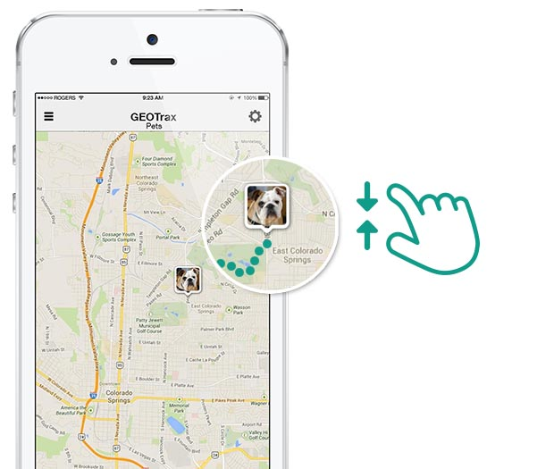

BreadCrumb Tracking
Our strategic partnership with ADT Security provides you with a 24/7 security team standing by monitoring your every action to ensure you are safe. ADT Security agents are trained on ways to recognize "mistakes" or real-world danger - and then to use their professional training in order to make a determination regarding whether the police should be called. Should yourGEOSafety app turn on live audio or video feeds, it is their job to listen or watch the situation and make a determination as to the danger. This option prevents possibly embarrassing situations that could occur if your monitoring system were to be sent to friends or family members - who are more interested in "snooping" into your life vs. your personal security.